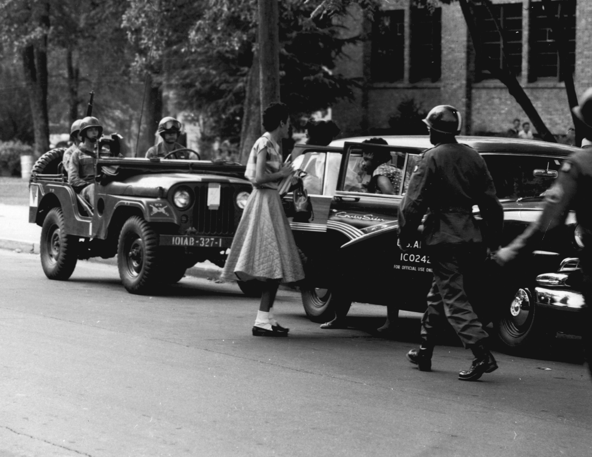

Directions: Read the background, study the photograph, then answer the questions.
Background. The photograph below shows soldiers of the 101st Airborne Division escorting Black students to Central High School in Little Rock, Arkansas, in September 1957. Three weeks earlier, Governor Orval Faubus had posted the Arkansas National Guard at the school to bar the nine students a federal court had ordered admitted. On September 24, President Dwight D. Eisenhower addressed the nation and signed the order that put federal troops in Little Rock. The next day the students entered the school under this escort and finished the school year under military protection. Source: United States Army photograph, courtesy of the National Archives, via Wikimedia Commons.

1. Source the photograph. Who took it, who are the soldiers, where are the students going, and in what month and year?
2. Name the order that stands behind these soldiers, and state the two things it did to the Arkansas National Guard and to federal troops.
3. Eisenhower told the nation that mob rule cannot be allowed to override the decisions of our courts. State the ground he claimed for sending troops, and state one thing he did not claim as his ground.
4. Connect this photograph to Montgomery. Name the tactic the earlier campaign used, the organization that ran it, and the number of days it held out, and state in one sentence how its method differed from the method in this photograph.
1. Source the photograph. The photograph was taken by the United States Army and is held courtesy of the National Archives. The soldiers are paratroopers of the 101st Airborne Division. They are escorting the nine Black students, the Little Rock Nine, into Central High School in Little Rock, Arkansas, in September 1957, on and after September 25. (Blueprint 6)
2. Name the order, and state its two actions. Executive Order 10730, signed by President Eisenhower on September 24, 1957. It placed the Arkansas National Guard under federal command, federalizing the same force Governor Faubus had used to bar the students, and it authorized the Secretary of Defense to use federal troops, including the 101st Airborne, to enforce the federal court's desegregation orders in the Little Rock School District. (Blueprint 6)
3. State the ground Eisenhower claimed, and one he did not. The ground he claimed was the duty of the Executive Branch to uphold the federal courts once mobs had prevented the carrying out of a court's orders and local authorities had failed to stop them. He did not claim personal support for the Brown decision or for integration as his ground; he had never publicly endorsed Brown, and the address argues from the rule of law rather than from agreement with the ruling. (Blueprint 6)
4. Connect the photograph to Montgomery. The tactic was a boycott: Black residents of Montgomery refused to ride the city buses. The organization that ran it was the Montgomery Improvement Association, under Martin Luther King Jr. It held out for 381 days, ending when the Supreme Court ordered the buses desegregated in Browder v. Gayle. The methods differed in where the pressure sat. Montgomery's pressure came from the movement itself, withdrawing fares and building its own transport. The pressure in the photograph came from the federal government, soldiers enforcing a court order the movement had won in court and a governor had defied. (Blueprint 5 and Blueprint 6)
Teacher note. This check is formative. Question 4 is the lesson diagnostic. A student who describes the boycott as a march, or who cannot name the association that ran it, has the photograph without the method, and should redo sections B and C of the guided notes before the writing task.